4. Batch Recipes¶
Batch Recipes are built from Raw Materials. Batch Recipe records include Ingredients & Costing, Instructions, Recipe Yield, Batch Weight, Quality Assurance, Shopping List, Nutrition Label, Claims, Recipe as Ingredient, Lab Analysis, and Expiration information.
Use the Search function to narrow down a long list of Batch Recipes and find a specific Batch Recipe. On the Batch Recipes header, you can also quickly see how many Batch Recipes are on your list. For example, the Batch Recipes list below has three entries:
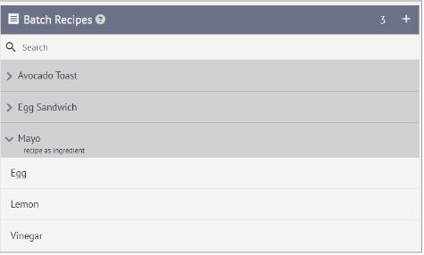How to Add a New Batch Recipe
Click the Plus icon on the Batch Recipes header to add a new Batch Recipe to your Batch Recipes list.
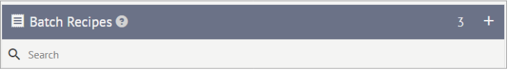A New Item form will appear. Enter the Batch Recipe Name and a short Description. Then click Save.
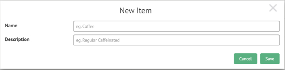The New Item form will disappear, and the New Item will now be listed under the Batch Recipes list.
How to add Raw Materials to a Batch Recipe
A newly added Batch Recipe will have no Raw Materials added as ingredients. They must be added by dragging and dropping Raw Materials to the associated Batch Recipe.
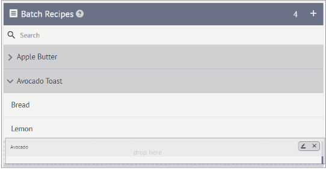When a Raw Material is added to a Batch Recipe, the Ingredients & Cost, Shopping List, and Nutrition Label is automatically populated with information from the Raw Material record.
How to Edit an Existing Batch Recipe
Once a Batch Recipe has been created, you will need to edit the Batch Recipe to add Instructions, Batch Weight (Recipe Yield), Quality Assurance, Claims, and Expiration. You will also be able to set Recipe as Ingredient and Add Lab Analysis at this point.
To edit an existing (or newly created) Batch Recipe, hover over the Batch Recipe of interest.
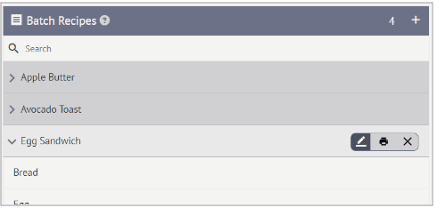Click the Edit icon from the mini pop-up menu.
The Batch Recipe form will appear. The menu on the right-hand side of the Batch Recipe form allows you to navigate to different pages of the Batch Recipe, while the page content is situated on the left-hand side.
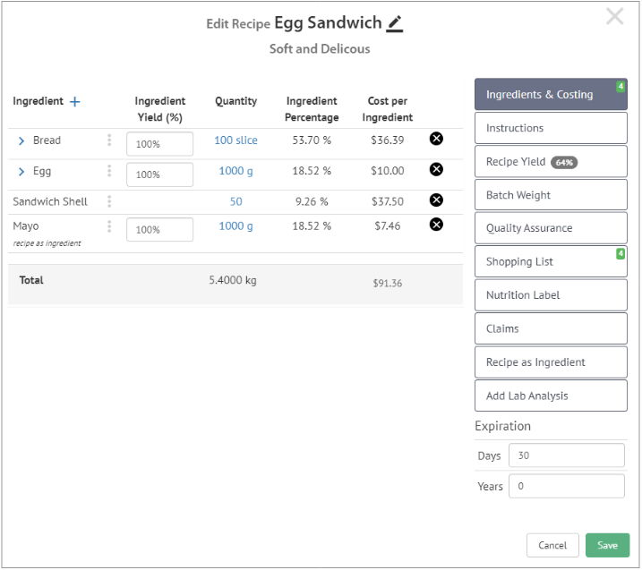
Ingredients & Costing
You start on the Ingredients & Costing page, which lists the following information:
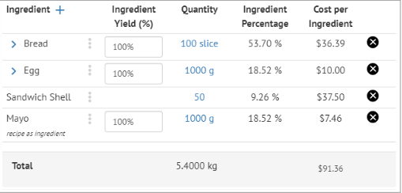
Ingredient name – pulled directly from Raw Material record
Ingredient Yield (%) – enter how much of the ingredient ends up in the Batch Recipe
Quantity – enter the quantity using the unit of measurement chosen on the Raw Materials Recipe Measurements page.
If Bread is listed with a **slice* being 29g, then you would enter the number of slices of Bread in a single batch*.
If Egg is listed with a unit of 1 **gram*, then you would enter the number of grams of Egg in a single batch*.
Ingredient Percentage – automatically populated by the software by multiplying the set Quantity by the Recipe Measurements from the Raw Material entry to calculate the Ingredient volume, then finding the percentage of the total recipe volume.
2900g of Bread (29g x 100 slices)/ 5400g * 100 = 53.70%
1000g of Egg /5400g * 100 = 18.52%
500g of Sandwich Shells (10g x 50 shells)/5400g = 9.26%
1000g of Mayo/ 5400g = 18.52%
Cost Per Ingredient – automatically populated by the software by multiplying the Ingredient Quantity by the Unit cost.
If Bread costs $2.51 per 200g, then a 29g slice = $0.3639
Therefore 100 slices of Bread = $36.39
At the bottom of the Ingredients & Costing page is a Total tally of the Batch Recipe Ingredient volume and costs.
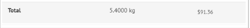
Instructions
Add preparation Instructions by clicking the Plus button. Rearrange the Instructions order as needed using the hamburger icon. To remove a step, click the X icon.
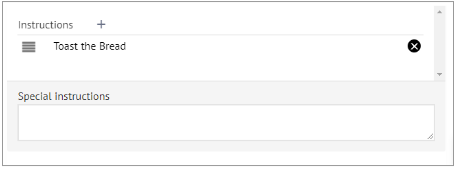Print Batch Recipe Instructions in PDF format by clicking on the Printer icon on the menu.
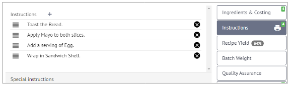Save on your computer and open PDF. Print to enjoy a hard copy of the Instructions list.
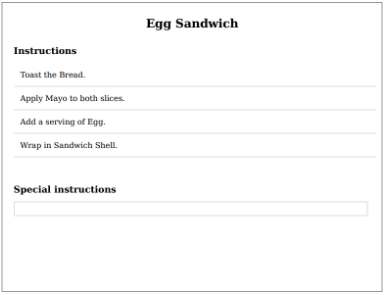
Recipe Yield
Recipe Yield is not an individual paged. Recipe Yield is auto-calculated as a percentage once the Ingredients & Costing and Batch Weight pages are filled out. No manual entry is possible.
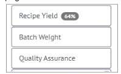
Batch Weight
Click Batch Weight to open a small box for entering the Total Batch Weight (once prepared) and the Units Yielded.
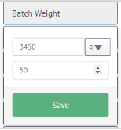
In the Egg Sandwich example, the resulting Batch Weight is 3450g for 50 Egg Sandwiches
Click Save, and the box closes.
Recipe Yield now automatically populates by dividing the resulting Batch Weight by the initial weight of all Ingredients.
(3450g of Egg Sandwiches / 5400g of Ingredients for Egg Sandwiches) * 100 = 64%
Quality Assurance
Add Quality Assurance information by setting the QA Attribute, Data Type, and Required or Not Required. Choose from the following QA Attributes:
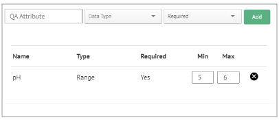
Consist
pH
Brix
aW
Moisture Content
Sal
Scoville
Initial Weight
Water Temperature
Calibration Check
Humidity
Shopping List
The Shopping List is created automatically by combining information from the Batch Recipe Ingredients & Costing page and the Raw Material entries.
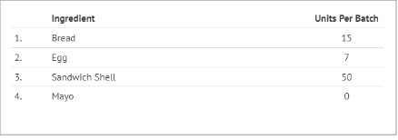Any Recipe as Ingredient items, like the Mayo, are batched separately and will show 0 Units Per Batch.
Print Batch Recipe Instructions in PDF format by clicking on the Printer icon on the menu.
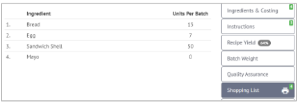
Nutrition label
The Nutrition Label page is another pre-filled page combining the information from the Raw Material entries and Ingredients & Costing page. All fields can be edited as needed.
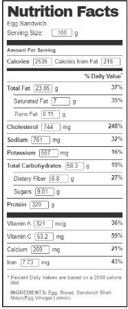
Claims
Add any Claims that apply to the entire Batch Recipe by clicking the Plus icon next to Recipe Claims. Choose from the drop-down menu of previously created options or enter a new Claim.
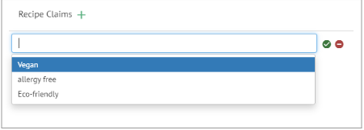
Recipe as Ingredient
To set a Recipe as Ingredient, meaning the Batch Recipe will be used as an Ingredient in other Batch Recipes, click the Recipe as Ingredient option on the menu.The checkmark denotes that the Batch Recipe now has the designation of Recipe as Ingredient. Select Also Sold Item if the Batch Recipe is also sold on the Menu as an individual item. Set the Recipe Measurement.
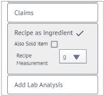To remove Recipe as Ingredient from a Batch Recipe, click on the checkmark, then click OK on the confirmation message.
Add Lab Analysis
Drag or Drop one or more files onto the gray area to Upload a Batch Recipe Lab Analysis. Or click the gray area to open your folders so you can navigate to the Lab Analysis.
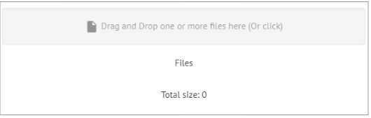
Expiration
Expiration does not have its own discrete page. It is listed in line with the rest of the Batch Material menu. To add Expiration information, simply add the shelf life in Days and/or Years.
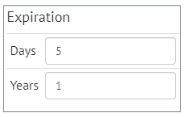You have now finished editing an existing (or newly created) Batch Recipe. Review each page and then click Save.
How to Print a Batch Recipe
Hover over the Batch Recipe to be printed and click on the Printer icon.
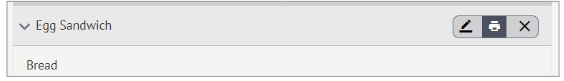Save the Batch Recipe PDF. The overall Batch Recipe PDF contains the Batch Recipe Ingredients & Costing information, the list of Instructions, and the Expected Weight and Expected Yield.
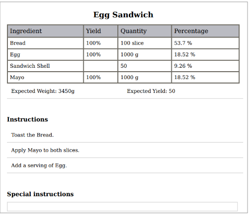